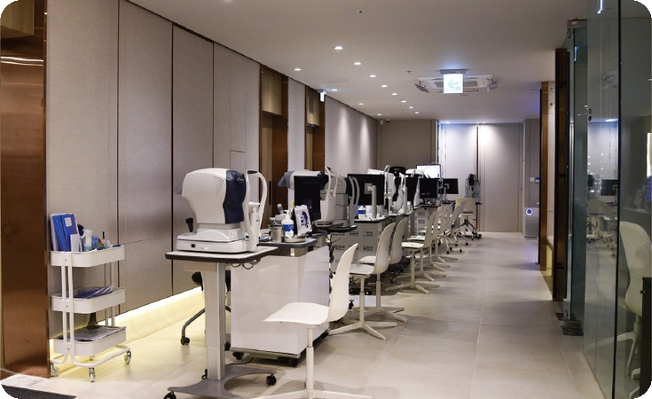

MACULAR DEGENERATION
시야의 중심에 생긴 변화,
세심하게 살펴봅니다.
글씨와 얼굴을 보는 중심 시력의 변화를 확인합니다.

UNDERSTANDING
황반변성 안내
황반변성은 망막의 중심인 황반에 변화가 생겨 중심 시력이 영향을 받는 질환입니다. 유형과 진행 정도에 따라 관찰과 치료 방향이 달라집니다.
WHAT TO NOTICE
이런 변화를
살펴보세요
직선이 휘어져 보입니다.
시야의 중심이 흐리게 보입니다.
글씨를 읽거나 얼굴을 구분하기 어렵습니다.
초기에는 변화를 느끼지 못할 수 있습니다.
증상만으로 질환을 판단하기는 어렵습니다. 검사와 진료를 통해 원인을 확인하세요.
DIAGNOSIS
검사
- 01
안저검사
황반과 망막 상태를 확인합니다.
- 02
빛간섭단층촬영(OCT)
황반의 단면과 구조 변화를 살핍니다.
CARE & TREATMENT
관리·치료 방향
- 01
정기 관찰
유형과 진행 정도에 따라 경과를 확인합니다.
- 02
치료 상담
검사 결과에 따라 주사 치료 등 필요한 치료 선택지를 상담합니다.
QUESTIONS
자주 묻는 질문
직선이 갑자기 휘어 보이면 어떻게 하나요?
새로운 시야 변화가 생기면 빠른 안과 진료가 필요합니다. 증상만으로 원인을 구분하기는 어렵습니다.
검사와 치료 방법은 눈 상태에 따라 달라집니다. 진료 후 의료진과 함께 결정합니다.
진료 안내: 홈페이지 리뉴얼 기획안 · 일반 질환 정보 참고: National Eye Institute